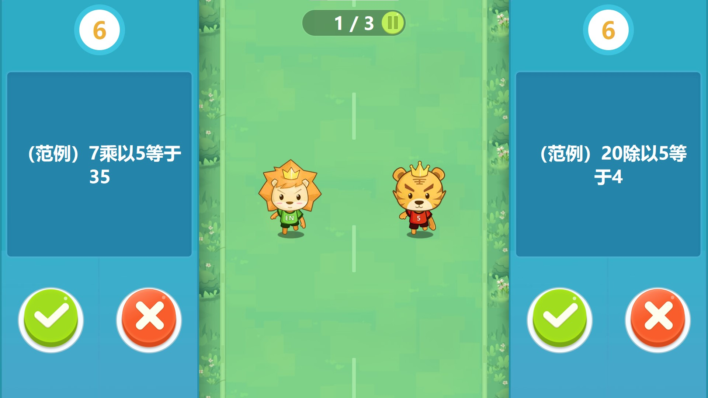
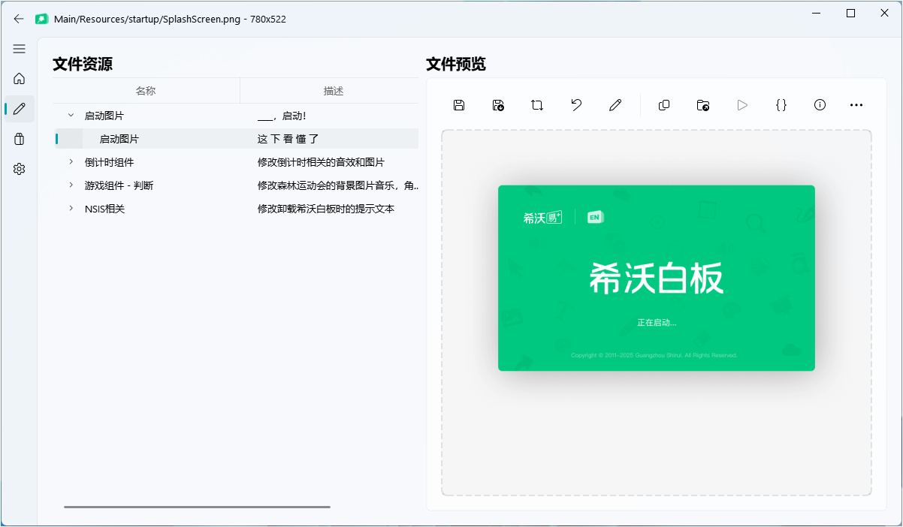
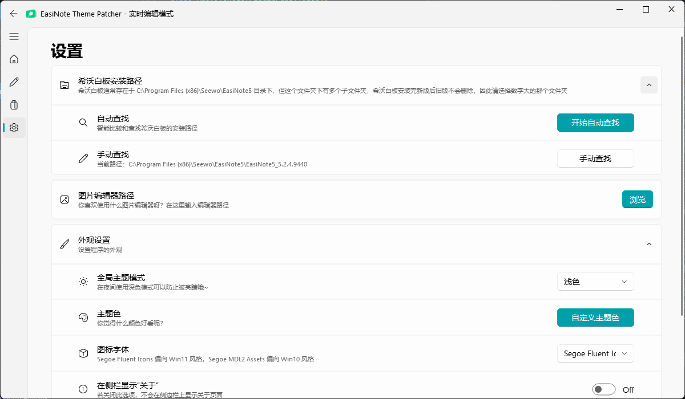
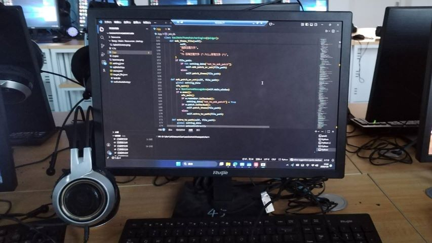

警告
警告
这个程序只是我用来练习 QFluentWidgets 的一个小作品，本身并不是一个成熟、专业的软件，更多是给大家看看思路、图个乐子。
因为我还是新手，代码和设计里有不少地方做得不够好，可能会有点粗糙，请大家多多包涵。
同时，这个程序对电脑性能要求比较高，体积已经到了 300MB 以上，这其实也不太符合我一直追求的「高效率、轻量化」原则。所以我并没有大规模宣传它，只是分享给感兴趣的朋友看看。
大家应该都知道希沃白板自带的课堂互动小游戏。在家里玩就是史，但在学校玩那简直就是3A大作。下面这张图能不能让你想到两个同学站在讲台前答题，下面同学疯狂起哄、全班笑成一片的快乐时光呢？
当然，很可惜，希沃白板的资源文件是固化的，那如果我们做一点小小的改动，比如把背景音乐换成哈基米音乐或流行的梗曲，把班主任的头P到人物的头上，或者不仅局限于游戏组件，把希沃白板倒计时结束提醒音效换成同学的怪叫声，把希沃白板的笔刷和艺术字填充换成鬼畜图片？
EasiNote Theme Patcher - 为更离谱的互动教学而生，让希沃白板再次伟大！（至少在我们班是的）
以下内容将教你如何正确使用本程序，错误使用程序可能导致一些后果，你最终是成为黑客还是嘉豪就看你有没有学会正确操作。
本程序没有自动备份功能，所以在开始之前请备份希沃白板整个安装文件夹
初始化
程序首次运行会自动查找希沃白板安装路径。点击侧边栏直接进入编辑页面（实时编辑模式）并展开左侧文件选择树形框，选择一个文件，如果显示文件不存在，别慌，大抵是要重新配置路径。
查找路径
进入设置页面，先点击“自动查找”，看看能不能找到安装路径（回编辑页面看文件能否正常打开）如果还不行只能手动输入路径了。
设置图片编辑器路径
如果你喜欢用PS、美图秀秀，或者Windows画图之类的图片编辑器，我们可以在设置中手动设置默认编辑器，这样做主题的时候就可以直接点菜单上编辑按钮调用它们进行编辑，不需要一个一个导出替换了。
 警告
警告
有时希沃白板自动更新会导致路径变动，若找不到文件可能需要重新执行此操作。
主界面
在主界面，我们可以直接打开别人做好的主题文件（通常是7z）打开文件后可以选择解压到临时目录还是直接应用。解压到临时目录后可以在编辑页面中编辑这个主题，直接应用就会立即替换希沃白板资源，需要提前做好备份工作。

如果不打开文件就直接进入编辑界面，就可以直接编辑希沃白板的资源，所有更改立即生效。
 注意
注意
EasiNote Theme Patcher不存在“保存工程文件”这一说，因为无论是解压到临时目录还是实时编辑，都是直接在对应文件夹进行操作，所见即所得。菜单栏上的那个长得像软盘的东西叫做导出文件，用于导出7z格式的主题包。
编辑页面
如果你用过ResourceHacker就会很快熟悉软件操作，我们可以用鼠标展开树形视图来选择文件，也可以直接使用键盘上下左右键进行导航。
以一个图片文件为例，选中这个文件，右侧预览窗格就能看到图片。
那你想知道顶部菜单栏的按钮是用来干什么的吗？从左到右分别是：
- 导出主题包（Ctrl+S） 将主题包导出让其他人也能用
- 导出选中的文件（Ctrl+Shift+S） 将选中的资源文件导出
- 替换文件（Ctrl+R） 替换选中的文件
- 恢复文件 没用，没做，懒得搞
- 编辑文件 如果你之前配置了图片编辑器路径，点这里可以编辑图片
- 复制文件（Ctrl+C） 将文件复制到剪贴板，例如选中一个图片，点击复制后可以直接粘贴到Word里或者用QQ发送
- 打开文件所在目录 顾名思义
- 播放文件 播放所选文件（对于音频）
- JSON模式 格式化JSON文件
- 文件信息 显示文件详细信息，在左侧文件选择框中双击文件也可弹出详细信息
- 启动希沃白板（F5） 启动希沃白板
- 丢弃临时文件 在解压到临时文件后，如果编辑完成并导出为主题包，可以关闭当前编辑进入实时编辑模式
另外有些事情可能会跟你想的不一样，例如导出的主题压缩包可能体积很小，这是因为程序会智能识别修改了哪些文件，只打包修改后的文件，不会压缩整个希沃白板安装目录。
商店页面
我知道商店页面没做好，代码AI写的，我没时间修，先用着。
商店页面里，你可以看到别人分享的主题，有些很正经，有些一看就是要出教学事故的那种，风格差异很大。
多看看别人怎么改图、怎么配音效，抄一抄思路，比自己瞎摸强多了。
另外，如果你自己做了主题想投稿，把7z和主题名称，主题介绍等信息发给xxt8582753@126.com
设置界面
没啥好说的，自己摸索。
另外感谢你能看到这里，作为给耐心的人的奖励，测试邮箱为sorutokawaii@xxtsoft.top，使用这个邮箱进入调试菜单，如果你认真看完了以上内容说明你已有能力去探索一些不太好的东西了。
FAQ
Q：为什么音效播放不完全？
A：是这样的，希沃白板纯傻逼，假如一个音效原来只有2s，那你替换的音效也只能2s，超过2s的部分放不出来。目前无解，自行调整音频长度。
Q：希沃白板对格式要求严格吗？
A：这个问题不好回答，目前来看格式兼容性尚可，但如果源文件是png你别硬换jpg
Q：为什么有个登陆界面，或者说程序为什么要引入sqlite3？
A：小孩子不懂事写着玩的。我当时想搞登陆系统，太难就放弃了，很抱歉给你留了个烂摊子。
Q：为什么部分资源我换了还是不生效
A：这里我又要骂希沃白板傻逼了，准确来说，希沃白板根本没想过会有人闲的蛋疼换资源，所以有些大的静态资源（比如游戏背景声音）放在希沃白板安装目录，有些小资源（比如游戏中的人物）随老师的课件一起打包成enbx了。
enbx是啥嘞，enbx你可以理解为一个更高级的pptx，pptx本质上是一个压缩文件，布局，样式，以及图片视频之类多媒体文件都在里面。
那我们是不是用watchdog检测是否从希沃云空间下载enbx，劫持enbx然后解压enbx把文件换了就行？
还真不行。首先技术难度自不必多说，并且文件名随机的，虽然有一个xml索引，但你想吃屎吗？
解决方案有，但很不优雅，老师打开课件后趁Ta不注意返回备课，然后重新插入课堂活动，难度非常大，但是同步到云空间后再打开那个课件就是已经改好的了，一劳永逸。
关于
EasiNote Theme Patcher
Version: 0.0.1 beta
首先感谢学校机房给我提供场所写代码，下图是我第九节课翻墙（翻窗户）进机房写程序的场景。
程序中部分图片素材来自Project Sekai Stickers，烤批没救了。
EasiNote Theme Patcher 的诞生离不开 PySide6、QFluentWidgets 等开源项目。
虽然但是，我真的超级超级讨厌GPL协议啦
下载
我不知道为什么Pyinstaller打包出来那么大，应该是PySide6组件要精简一下，到时候再说
我知道国内网络环境对大家不友好，也可以网盘下载安装包